The Bojin Journal
Browse by concern.
Not sure what to search? Just tap the part of your face that bothers you most. Every guide is a short read with a gentle 5-minute ritual you can try tonight.
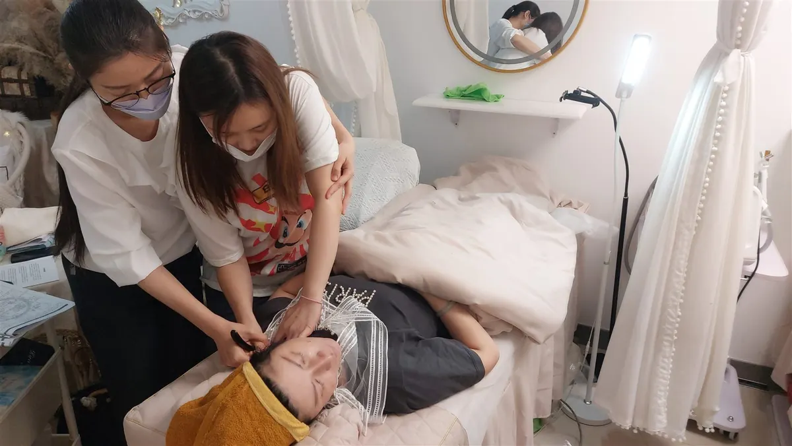
What can bojin actually do for your face?
No miracle promises here. The honest list of what a gentle method can and cannot change, so you start with expectations that survive week three.
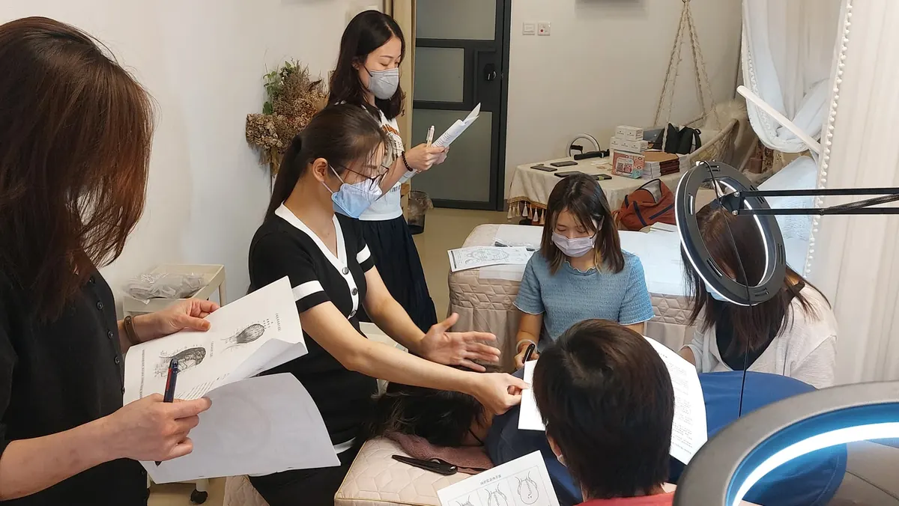
Who should skip bojin for now?
Blood thinners, a rosacea flare, recent injectables, broken skin. Every "wait" on the list, explained plainly and kindly.
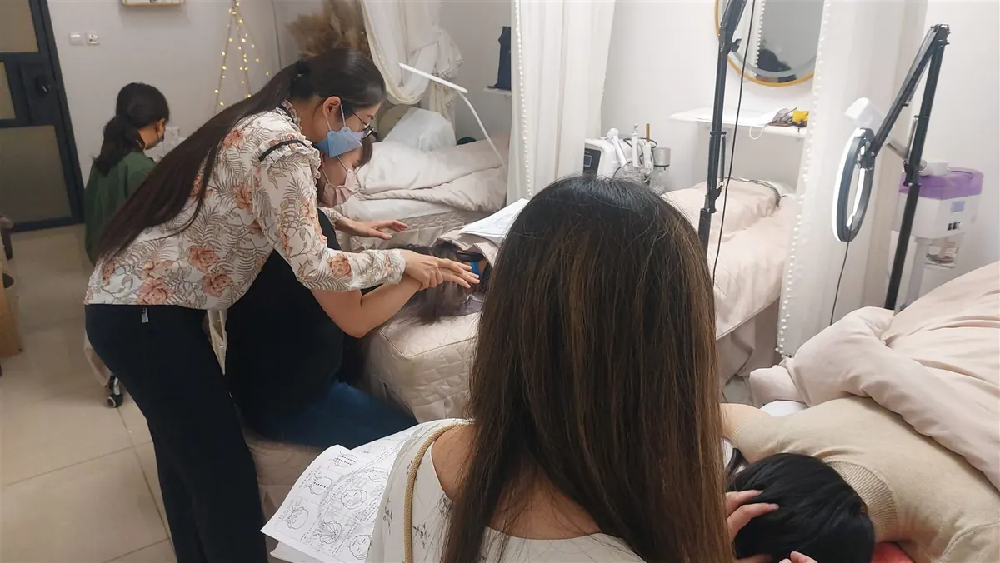
How often should you actually do bojin?
Two to three gentle sessions a week, and the rest days are part of the plan. Why daily isn't better, and how to read your own skin.
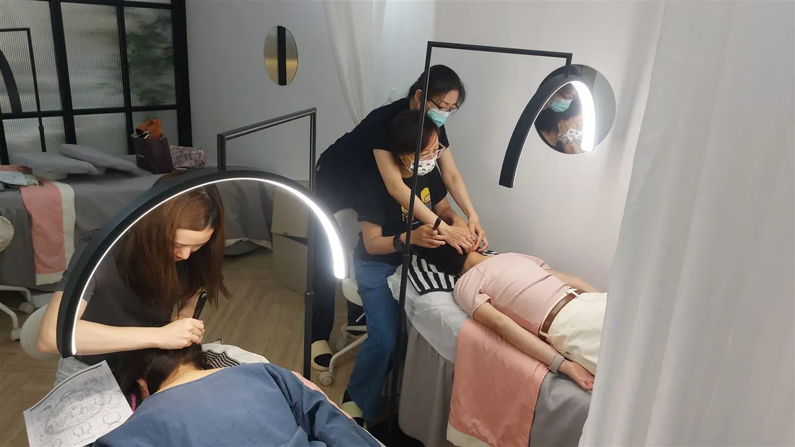
Steel stick, or the jade stone you own?
Different jobs, not a contest. Why the method uses stainless steel, and why you can still start tonight with the stone in your drawer.
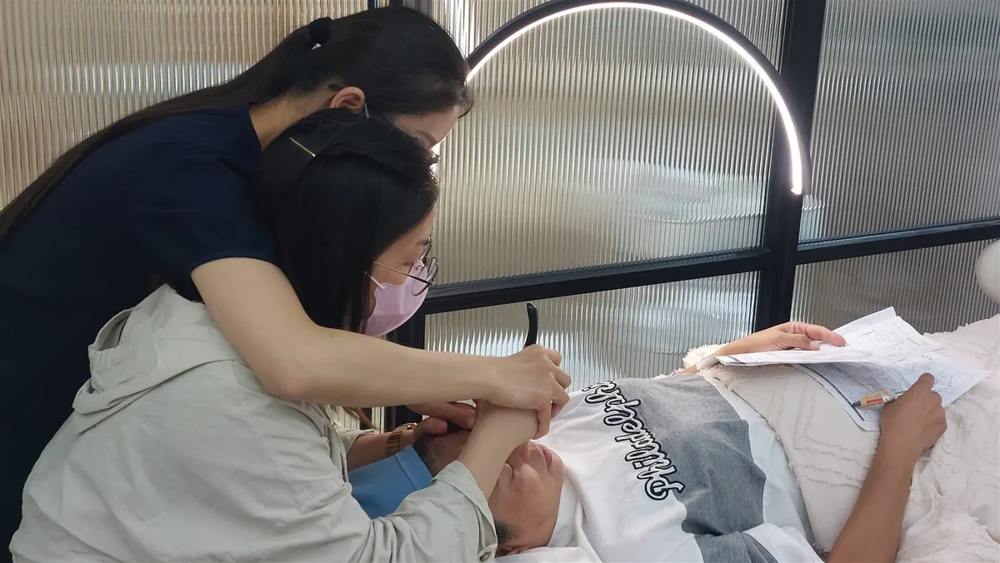
Dry, or with oil? One rule protects mature skin
The tool always needs something to glide on. The one-rule answer, how much to use, and the slip test that keeps every stroke kind.
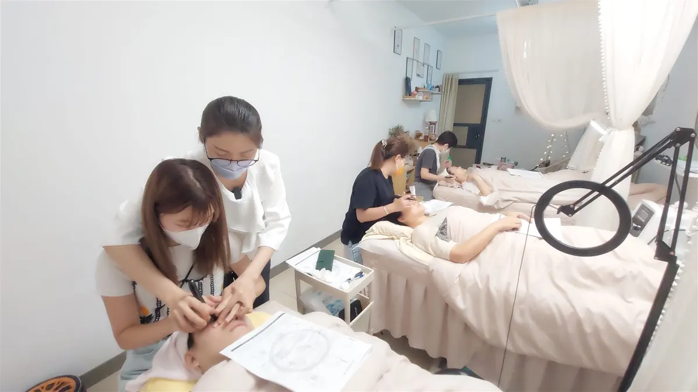
Redness, soreness, or a warning sign?
Light pink that fades fast is normal. A bruise is a stop sign. A calm decoder for the moment you wonder if that's supposed to happen.
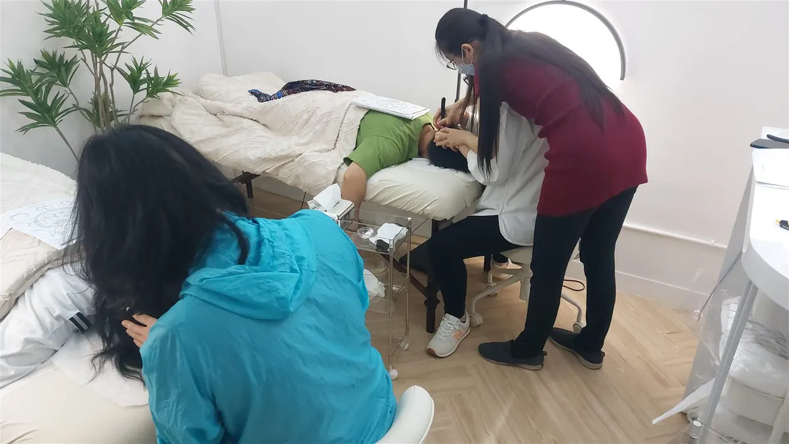
Nervous to start? Your first five minutes
A tiny, safe first session: one cheek, the stone you already own, and a built-in stop rule so nothing can go wrong.
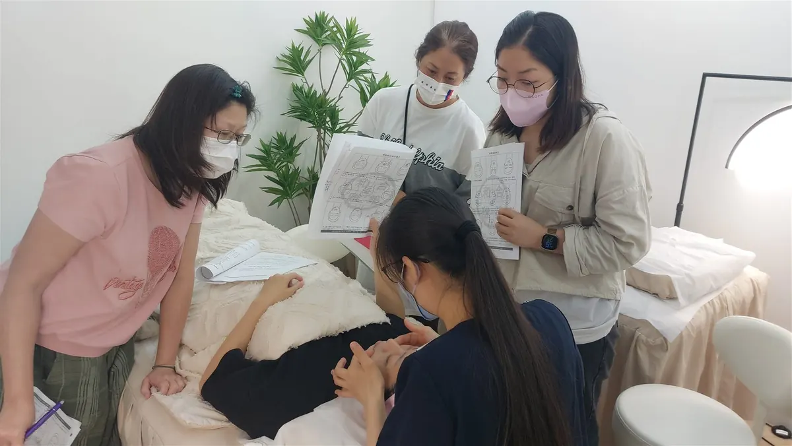
Is bojin just gua sha with a new name?
A fair suspicion, answered straight: gua sha is a tool, bojin is a method. What that difference means before you spend anything.
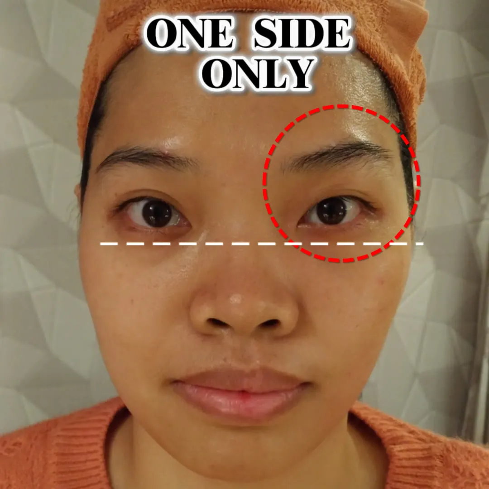
Does facial gua sha actually work?
Straight talk for skeptics. Limits first, benefits second, and nothing in between dressed up as a miracle. Judge it by your own mirror.

Had Botox or filler? What to wait for
Injectables and at-home care can coexist, with timing and a gentle touch. Why your injector's timeline always leads.
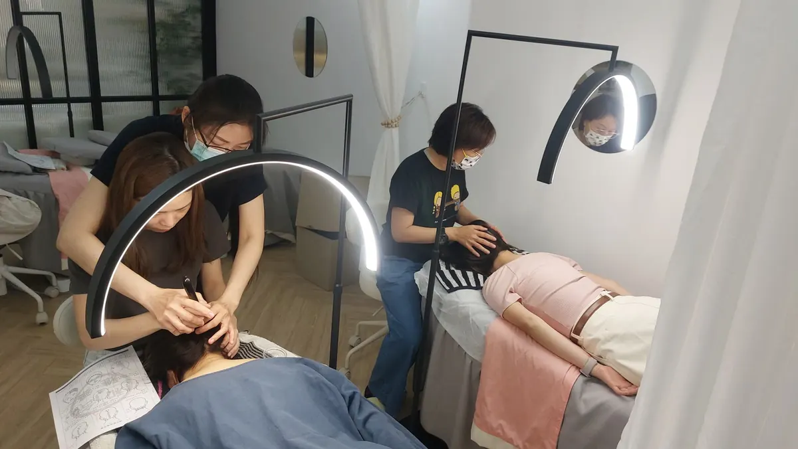
Dark circles that won't fade even after a full night's sleep?
Sleep was never the only cause — thin skin, a little shadow and pooled fluid all play a part. Here's what a careful few minutes can and can't do.
Under-eye bags after 50?
Some of it is fluid that pooled overnight, some is how the area changes with age. A gentle daily reset can ease the puffy part.
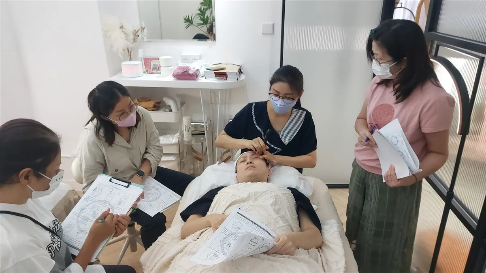
Crow's feet at the corners of your eyes?
Years of smiling and squinting, plus thinner skin after 40. It won't erase the lines, but it can soften the tension that deepens them.
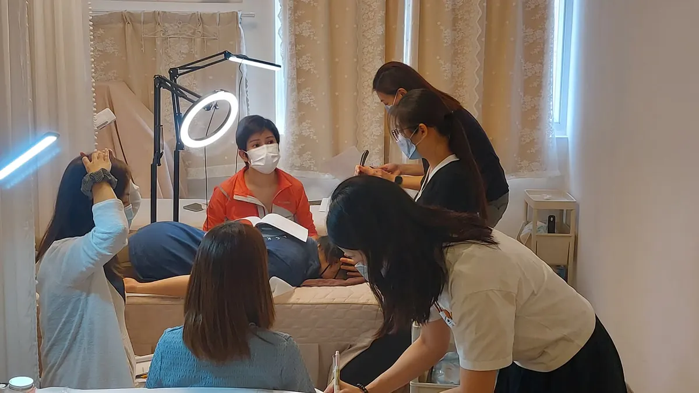
Heavy, hooded eyelids making you look tired?
Brow tension and fluid can leave lids feeling heavy. A gentle brow-and-eye reset can help the area look a little more open and awake.
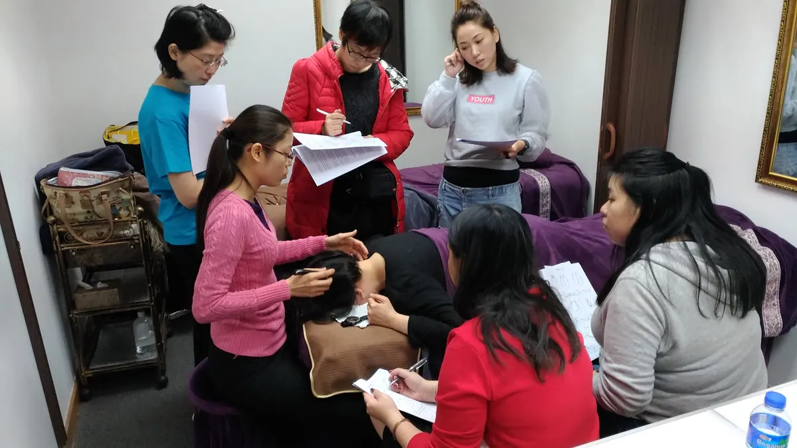
Screen-tired eyes by mid-afternoon?
Long hours on a screen leave the eyes tight and tired-looking. Here's a 2-minute reset you can do right at your desk, no mirror needed.
Menopause and tired-looking eyes?
Thinner, drier skin and broken sleep show first around the eyes. A calm morning reset can help them look brighter and more rested.
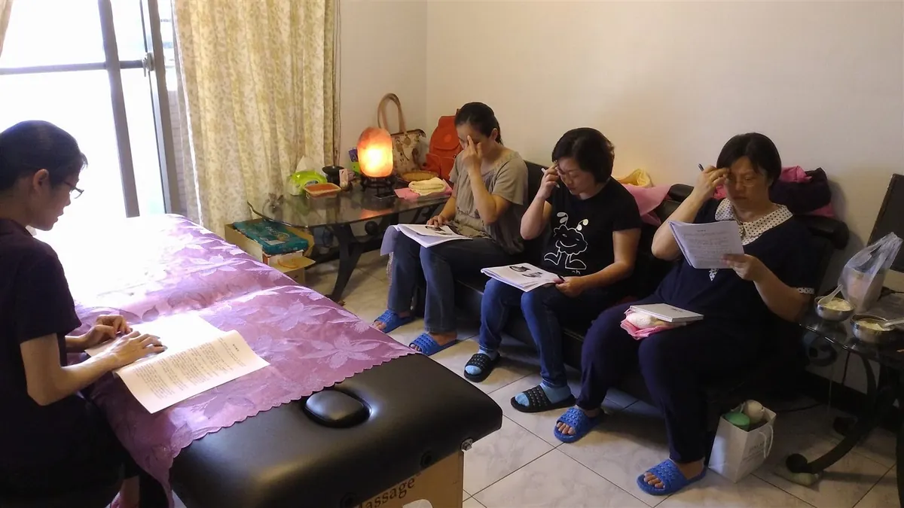
Is your eye cream just sitting on top?
Often it's the application, not the formula. A 30-second warm-and-press method helps your cream sink in instead of pooling.
Forehead lines getting deeper?
A lifetime of raising the brows, plus thinner skin. It won't erase lines, but relaxing the tension can help the area look smoother and rested.
Heavy, low brows making your eyes look smaller?
Brows sit lower with age and tension. Releasing the forehead and brow can help the area feel lighter and look a little more lifted.
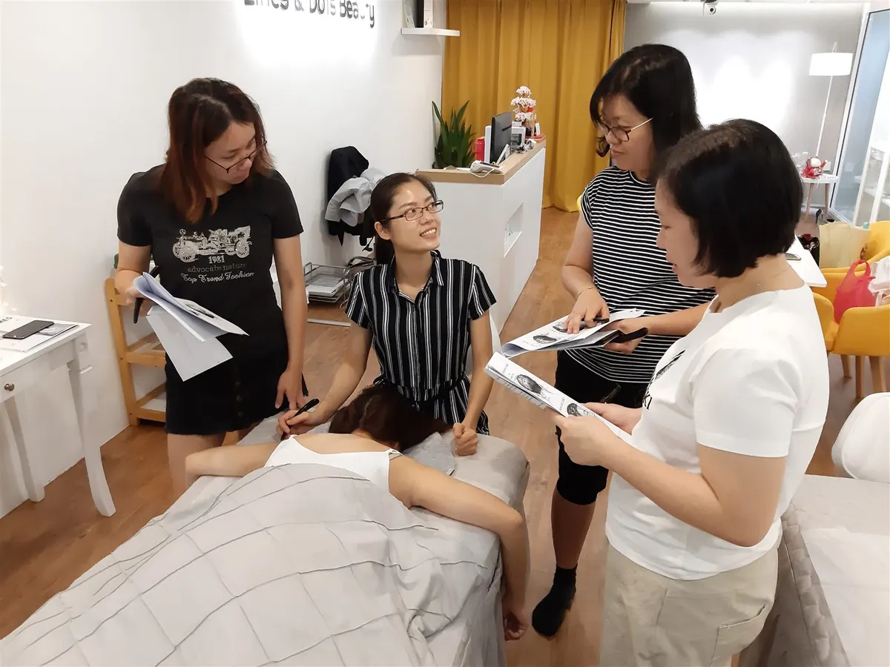
A tense forehead you only notice at the end of the day?
We hold stress and screen-focus in the forehead without noticing. A calming evening release helps it unwind.
“Natural alternatives to Botox” for your forehead?
An honest look: bojin isn't Botox and won't do what a needle does. Here's what a gentle daily habit genuinely can — and can't — do.
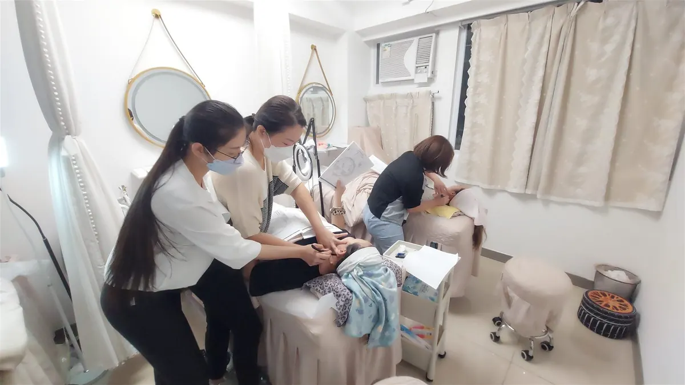
Why frown lines can deepen faster around menopause
Thinner skin plus more stress-holding can make the ‘11’ lines look deeper. Gentle release helps the area soften and look rested — honestly, not a fix.
Tired, puffy eyes every morning?
After 40, thinner skin and slower overnight drainage let fluid pool around the eyes — so you wake up looking puffy and tired even after a full night's sleep.
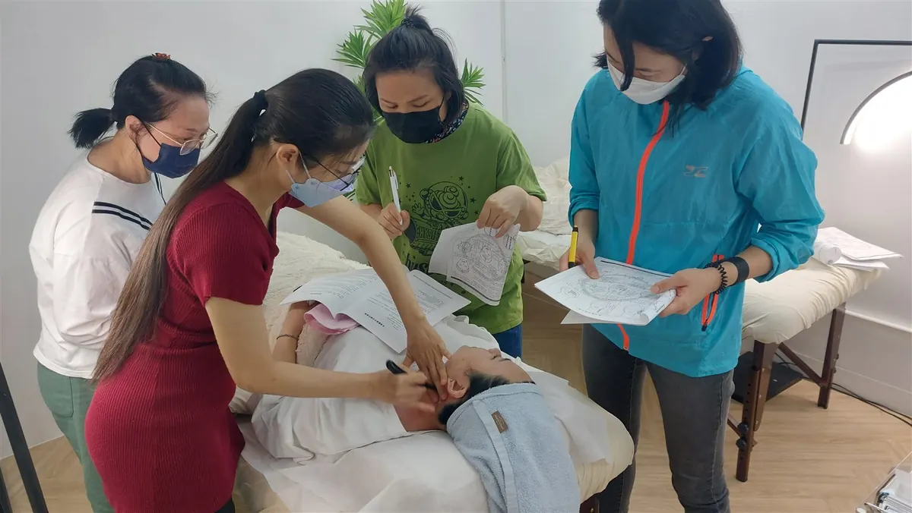
A softer jawline and a little double chin?
A softer jawline usually isn't just weight. Pooled fluid, a quietly clenched jaw and tech-neck posture all pull the lower face down.
A 2-minute jaw reset before your next video call?
Camera angles are unkind to a soft jawline and a tense neck. A quick desk-side reset before you log on can help.
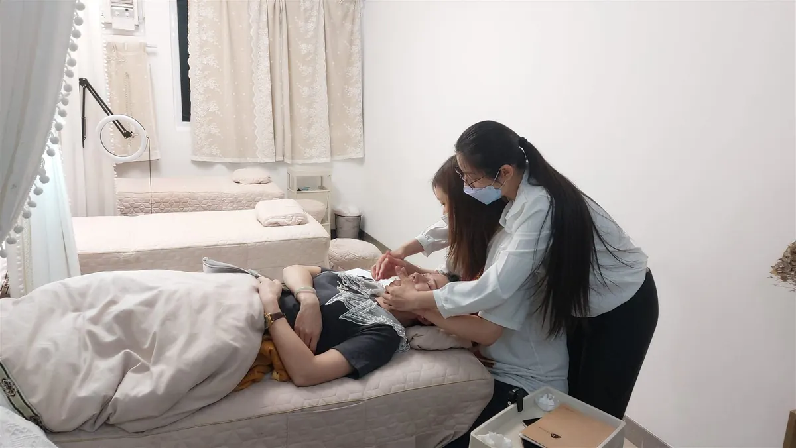
Why does your jaw feel tight by the end of the day?
Calls, chewing, unconscious clenching and hours looking down at a screen set into the jaw by evening. A calming 3-minute wind-down can help.
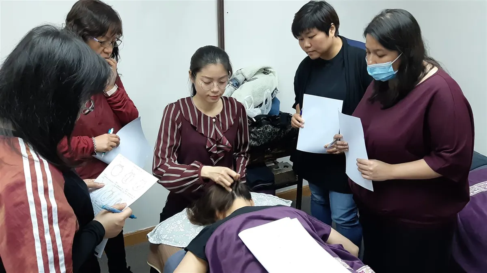
Smile lines settling in, cheeks a little lower?
As the support under your mid-face loosens, cheeks sit a little lower and smile lines deepen — the gentle downward pull that quietly reads as "older."
A 3-minute cheek reset before you put on makeup?
Puffy or tense cheeks can make foundation settle into your smile lines by midday. Here's a gentle pre-makeup routine to help it glide on smoother.
Puffy cheeks and deeper smile lines after a flight?
Cabin pressure, salt and hours of stillness pool fluid in the mid-face. A gentle post-landing reset can help you look like yourself again.
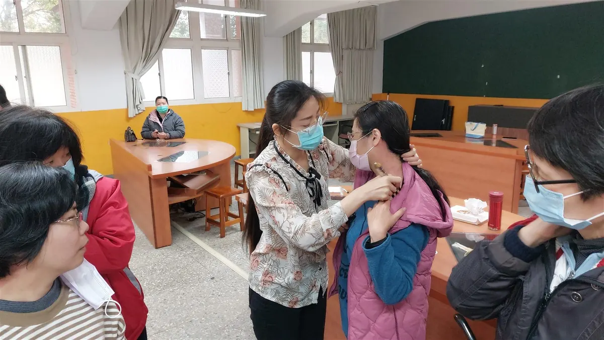
Frown lines and a heavy, tense brow?
Those vertical "11" lines come from brow muscles frowning all day — squinting at screens, and holding stress in your forehead without noticing.

Dull, puffy, tired-looking skin?
After 40, circulation and lymph flow slow down, so skin looks flat and puffy and your serums seem to just sit on top instead of sinking in.
A 5-minute glow reset before a big night out?
Big date or dinner tonight and your face looks flat? A gentle sweep before you get dressed can bring warmth and a natural flush back.
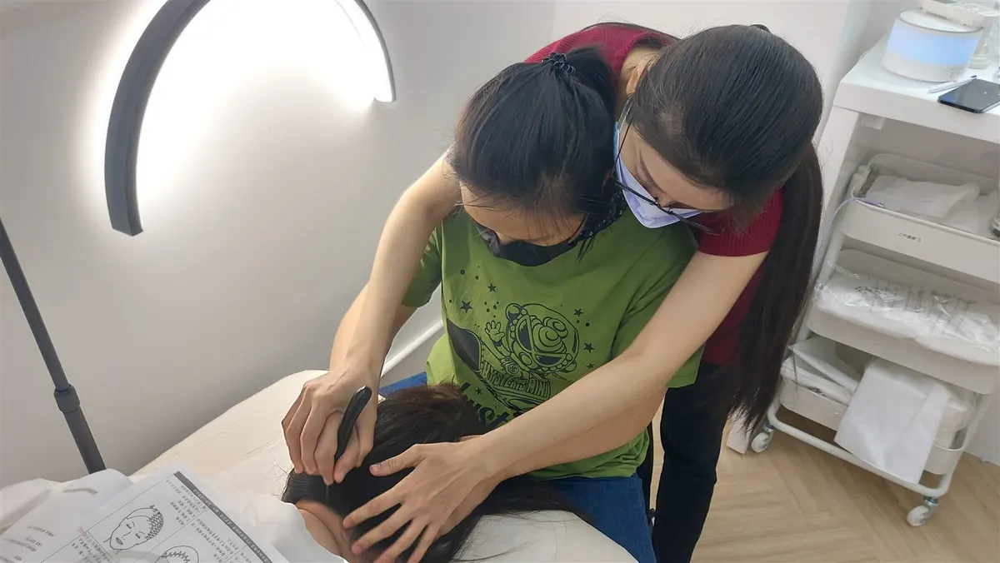
Dull skin after a bad night's sleep?
Rough night, flat and puffy skin, no time to spare? A quick sweep before makeup can help wake your face up for that one morning.
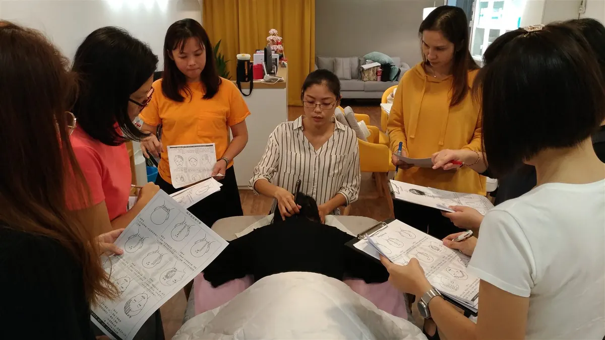
Does gua sha really work — or is it the technique?
If your gua sha stone hasn't delivered the glow you hoped for, it's probably not the stone. The tool matters far less than the technique behind it.
Is bojin safe, and when should you skip it?
Done gently, it suits most healthy adults. Here's the honest safety guide: when to wait, when to check with a professional, and how to keep every session kind.
How hard should you actually press?
Too heavy bruises and does no good; too light never reaches the tension. Here's the honest answer, and a simple way to find your own comfortable pressure.
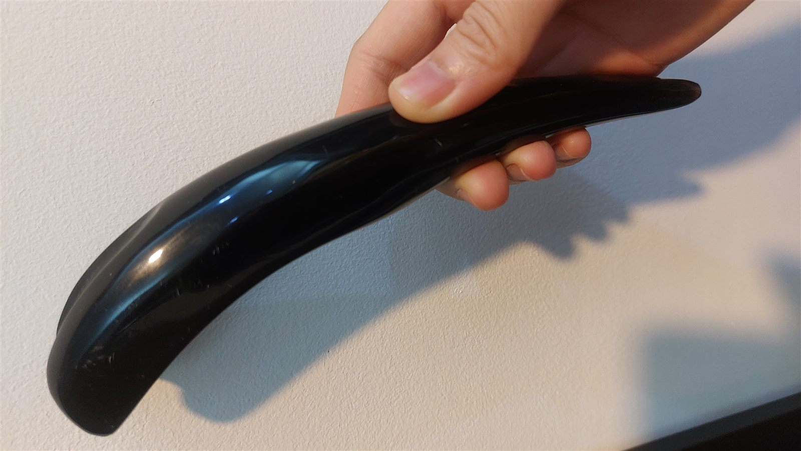
Fingers, a gua sha stone, or a bojin stick?
You don't need to buy a thing to start. Here's what your fingertips, a stone you already own, and a proper bojin stick each do best.
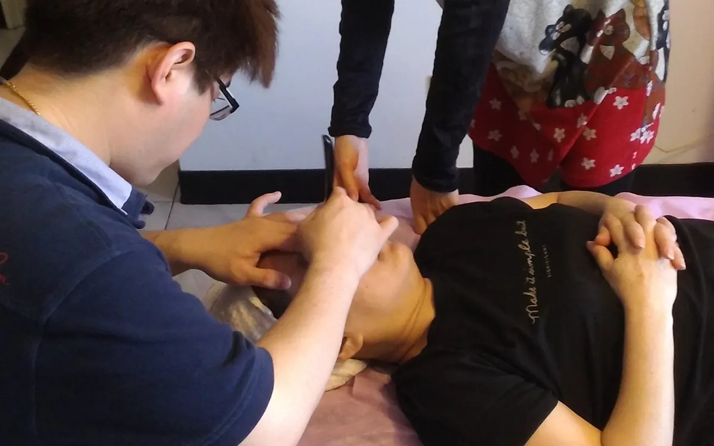
What should a simple morning face ritual look like?
You don't need an hour or a shelf of products. A few gentle minutes each morning, done in the right order, do most of the work.
Gua sha not giving you results?
You bought the stone and watched the videos, and your skin looks about the same. You're not doing it wrong — what's usually missing is the method.

Do you really need expensive facials?
Facials feel lovely, but they aren't the only way to keep skin bright and lifted. Here's what a few minutes of home care can really do.
No guides match that yet — try another word or tap “All”.
Why women keep practising
A few honest words from students who’ve learned with Yu-Ting.
She’s so dedicated and holds nothing back — she shares everything with us. Next time I’d love to come back for the body course too. — Judy C., Taiwan
I took the head-and-face course with no experience at all, and Yu-Ting’s patient, detailed teaching made it easy to pick up. A wonderful class. — Mercy W., Taiwan
Individual experiences vary. This is gentle self-care, not medical treatment.
Not sure where to start?
Let your face point the way.
Answer five quick questions and we'll match you to the right 5-minute ritual — plus a free personalised starter guide. Takes about a minute.
Free starter guide
Give your face ten quiet minutes.
Leave your email and the free guide — the condensed first lesson of the method — is ready to open in seconds. New journal entries follow, only when there's something worth sharing.
No spam, ever. Unsubscribe in one click. This is self-care, not medical treatment.